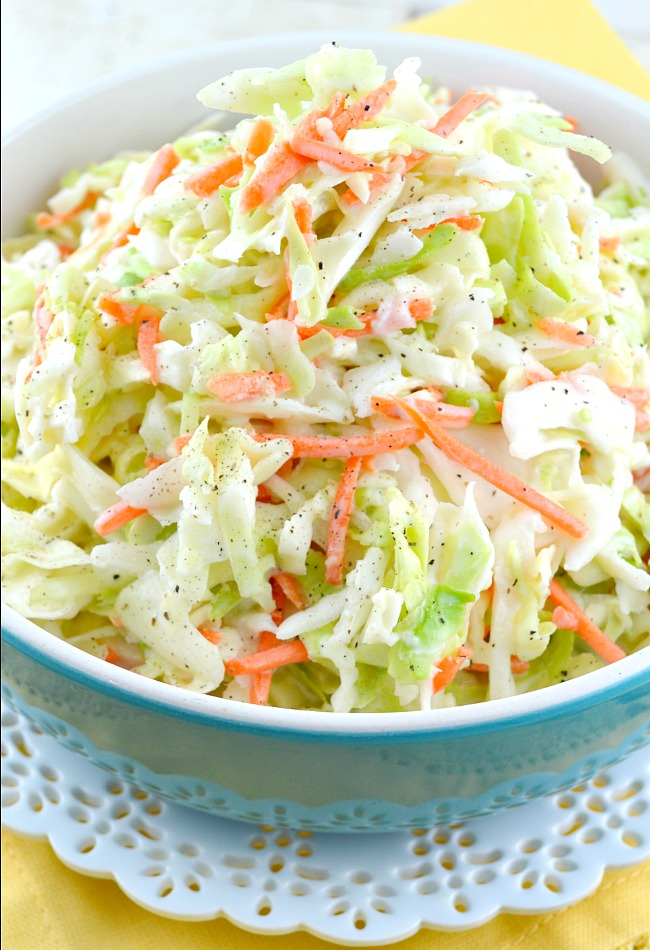

Coleslaw

Description
A creamy coleslaw dressing that can be made with ingredients
you already have! You can pour it immediately over a
14-ounce package of coleslaw mix or refrigerate until needed.
Ingredients
- ½ cup mayonnaise
- 2 tablespoons white sugar
- 1½ tablespoons lemon juice
- 1 tablespoon vinegar
- ½ teaspoon ground black pepper
- ¼ teaspoon salt
Steps
- Whisk mayonnaise, sugar, lemon juice, vinegar, pepper, and salt together in a bowl until smooth and creamy.